Warp · Design system · 2026
Lumen.
I built Warp's design system on my own, and directed the AI that wrote most of the code. What's mine is the problem, the visual language, and every judgment call. The AI did the typing.
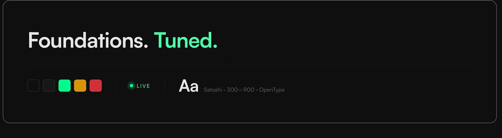
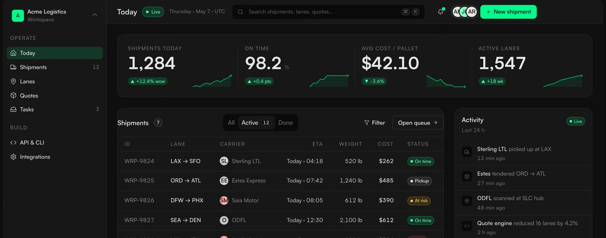
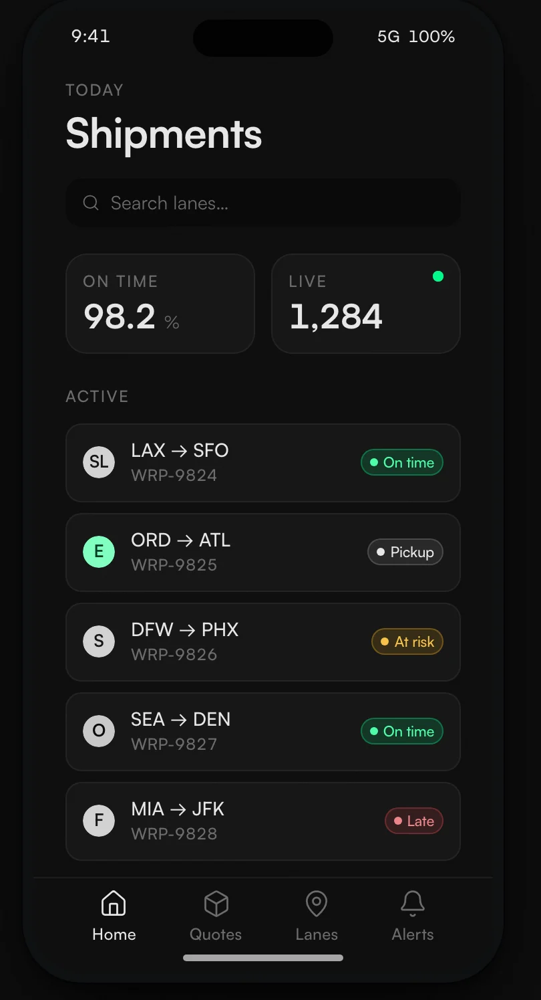
Warp ships fast, with a small team, across a lot of product and marketing surfaces. Each one had drifted into its own look. When I audited our transactional emails, I found three design systems running at once, with three different shades of brand green. Lumen makes them one, and it is built to be read by the AI agents writing most of the code, not only by people.
Built solo, with the AI doing the typing. These are the size of the system, not a claim about its impact.
The signature specimen A contrast bug became a build-failing guard
An agent reached for a token that did not exist, and text shipped at 1.66:1 on green. The fix became a token, a defensive component, and a check the build runs on its own; on its first run it caught the same bug in Lumen's own example code. The full story is in the second tab →
Three ways the same brand kept coming apart.
Warp had a brand: a loud green and a dark, dense operator feel. What it did not have was the layer that turns a brand into a system, the part that makes every screen agree with the next one.
The audit · transactional email Three CTAs, three greens
One brand, three greens, in the same channel. #4ADE80 was Warp's accent lime and #22C55E its success green; #00FA8A is the Spring Green they were unified into. A diagram of the real finding, drawn from Warp's own brand values, not a screenshot.
I stopped choosing between clean and dense.
The brief asked for Apple: clean, minimal, Ive and Rams. Warp's real character is a freight Bloomberg terminal, dark and dense and full of live numbers. Those are not opposites. They live at different layers, so I stopped choosing and started stacking them.
A 1.25 modular type scale, tight tracking on display. A 4-point base on an 8-point soft grid. Hairlines carry separation, and shadows are reserved for UI that genuinely floats. Motion decelerates and stays under 200 milliseconds.
An Obsidian #0D0D0D canvas, neutral where red equals green equals blue. Spring Green #00FA8A, one role only. Satoshi for every job, its tabular figures carrying the numbers, no second font.
A palette kept small on purpose.
Three families of color, one typeface, one grid. A single accent only reads as loud when nothing around it competes, so I gave it nothing to compete with.
Color Drawn from the real token ramps
The dark stops are a true neutral, red equals green equals blue, so nothing tints the canvas green. The accent was retuned from the old Warp lime to #00FA8A; the discipline, one hue in one role, is the part that was mine.
Spring Green was already Warp's brand color, used hundreds of times in the code before me. My part was the discipline. It means action, live, or success, and it appears nowhere else on the surface.
One variable family carries interface, display, body, and numerals, at weights 300 to 900. The monospaced feel on numbers comes from OpenType features on that same face, so there is no second font. That one call cut four families to one.
Type · Satoshi Set live, in the face it describes
Eight reference templates, one standard to match.
Each template is the canonical answer to "is this how a Lumen surface looks?", from marketing breath all the way to operator dense.
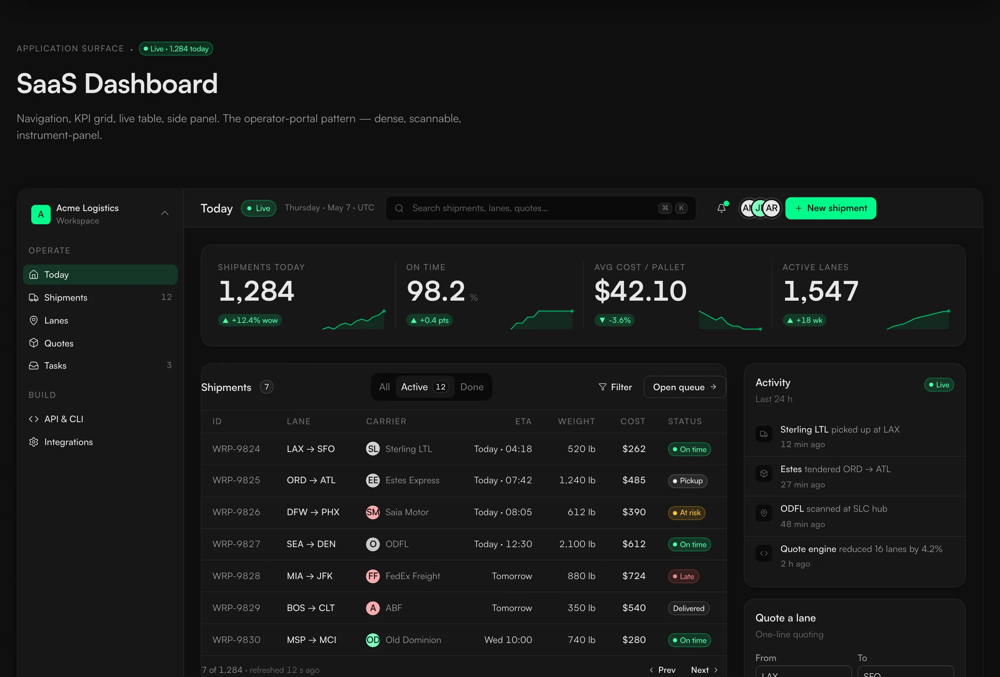
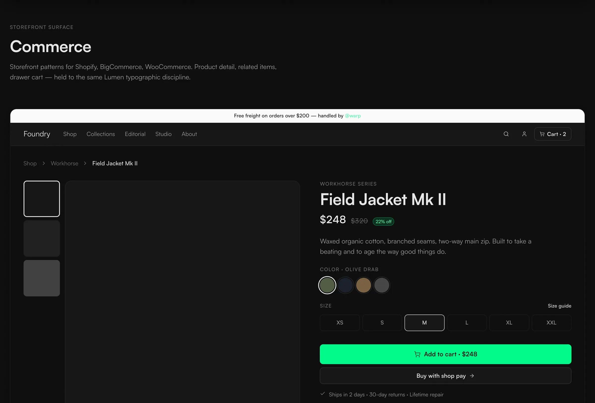
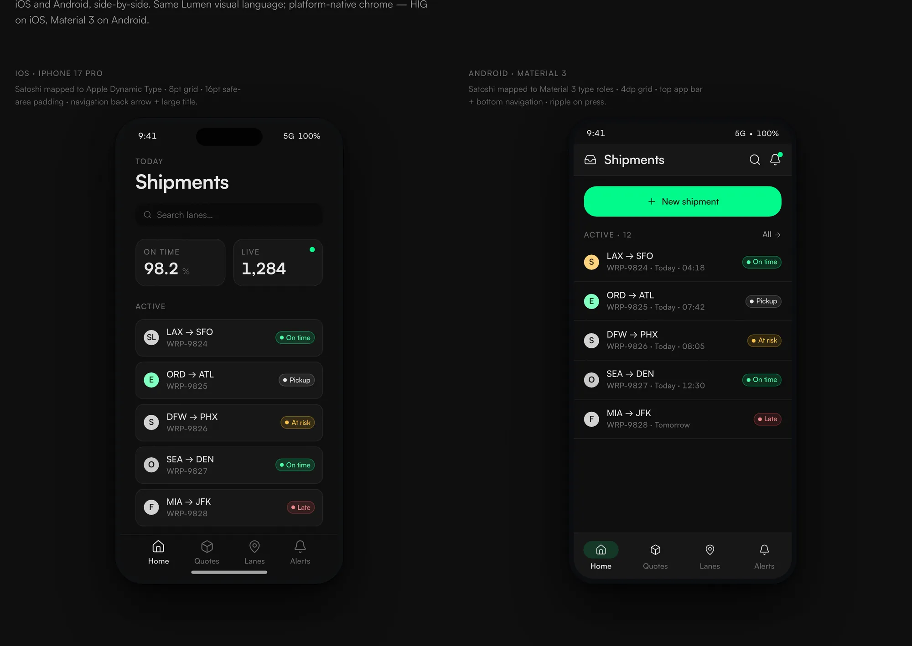
A number, a live dot, a rate ticker.
An operator sees three small pieces of Lumen far more than any button. That is where the operator-console feeling comes from, so they got most of the polish.
The three signatures Where the operator mood lives
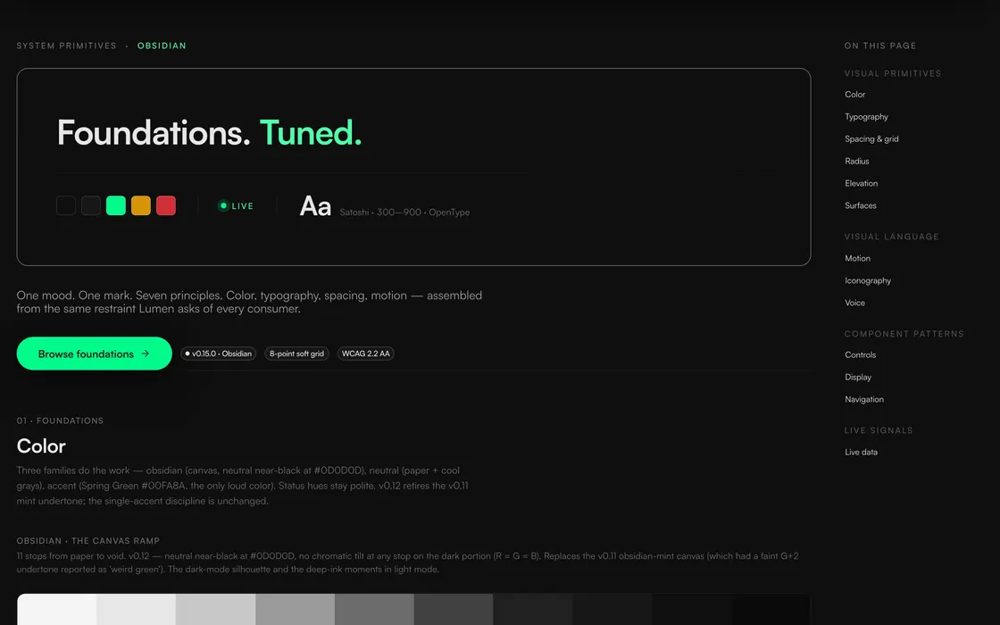
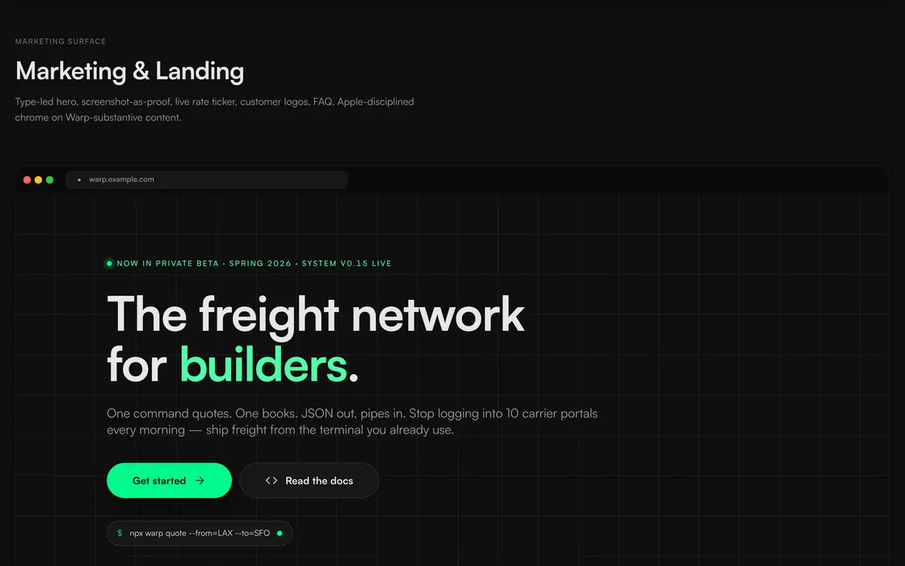
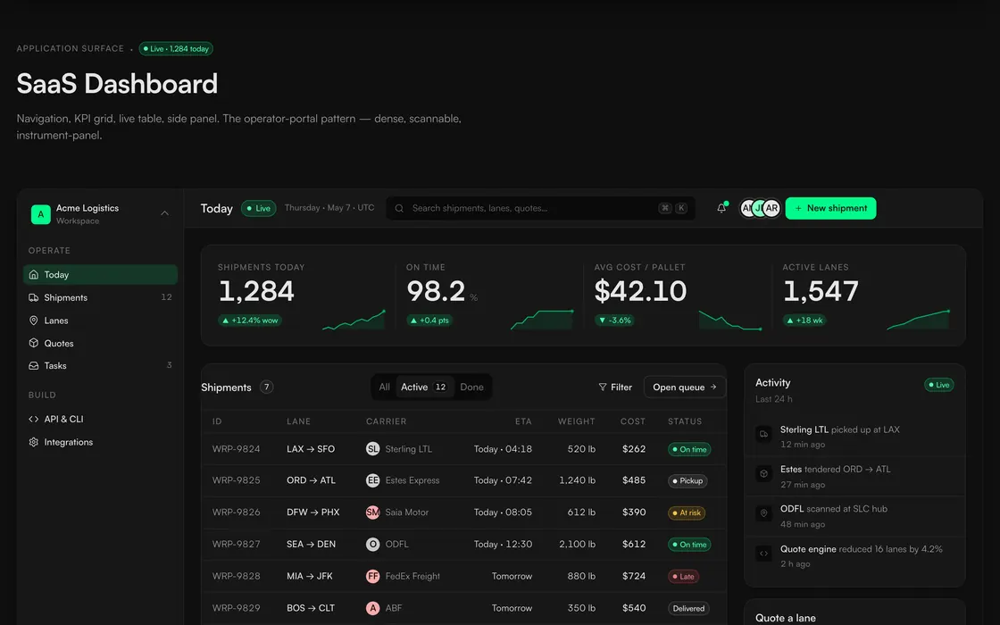
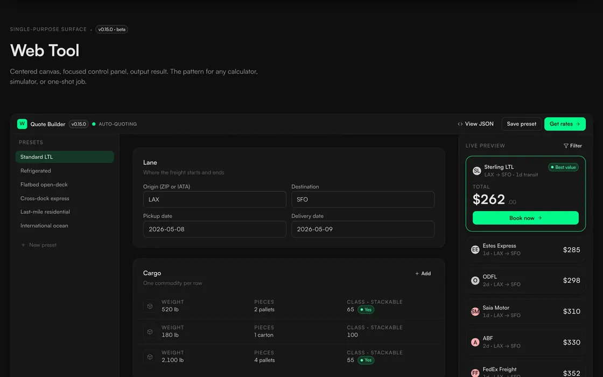
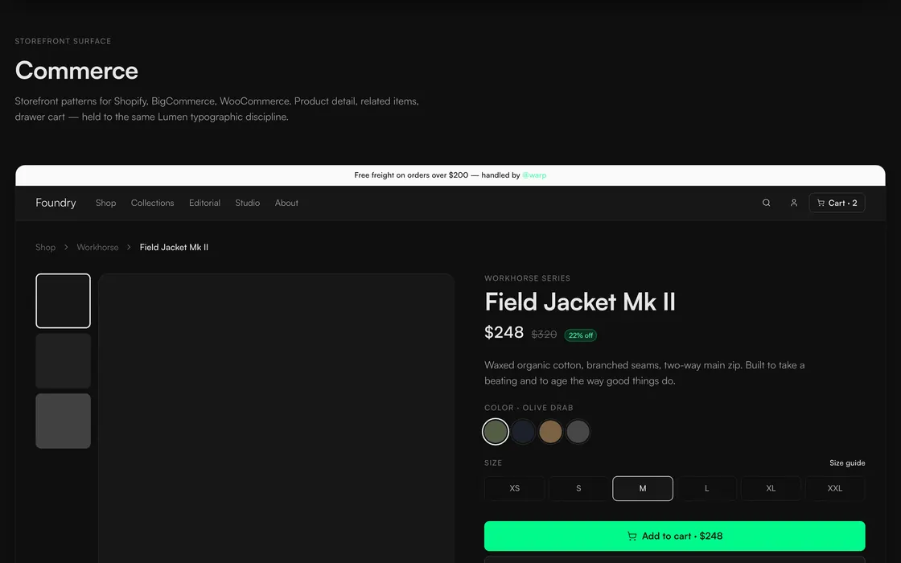
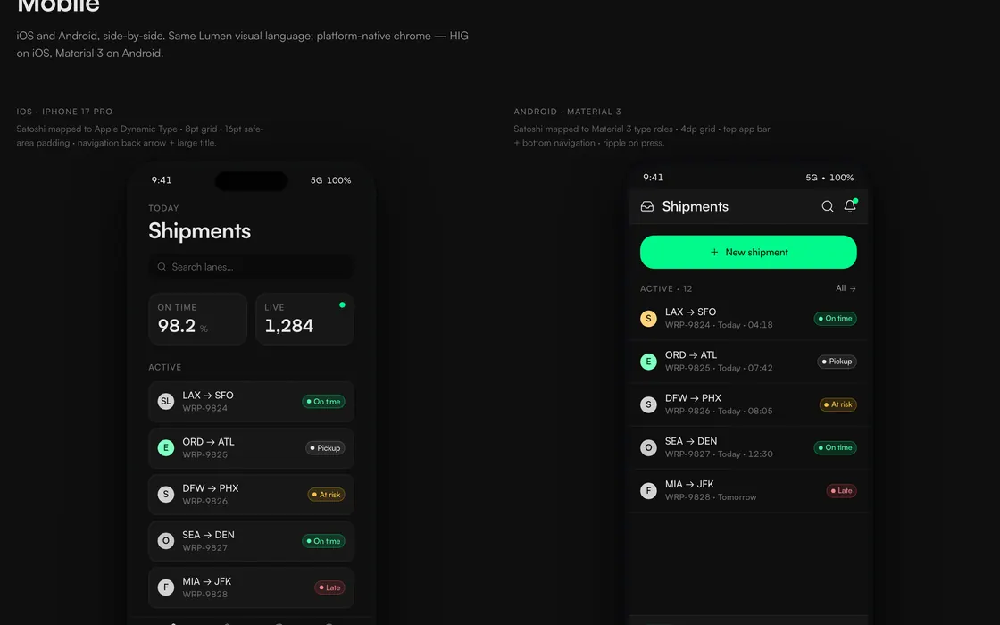
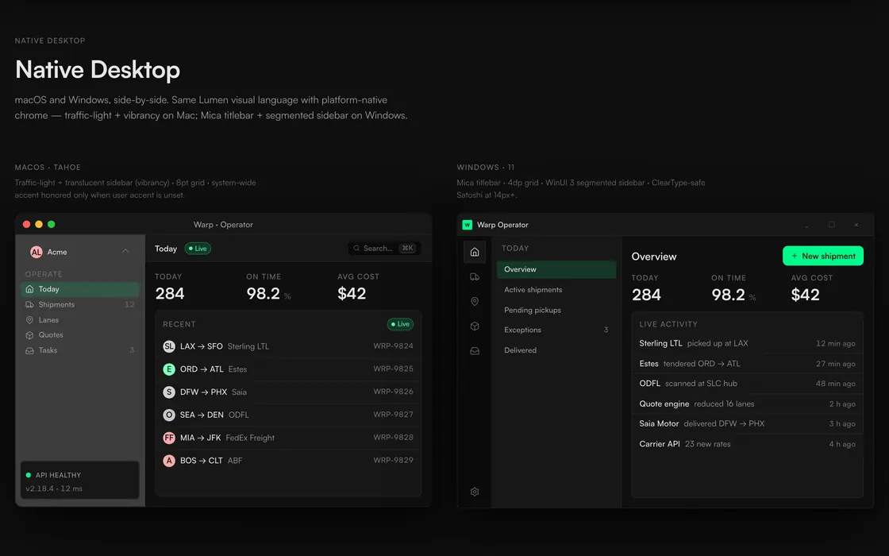
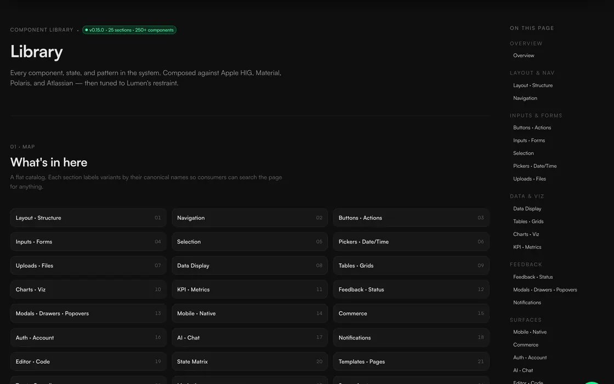
The system had to be legible to a machine first.
On this team an AI writes most of the UI code. That one fact changes what a design system is for. It is no longer a reference a person consults. It is the rulebook an agent has to obey while it types, and when the rulebook is not machine-readable the agent fills the gaps with the average of everything it was trained on. The screen looks plausible and quietly drifts off-system.
An agent keeps nothing between sessions. Whatever it understood yesterday is gone, so the system hands it every rule again at the start of every job, as tokens and specs it reads before it writes a line.
Documentation can list the tokens. It cannot stop an agent reaching for one that was retired, or hardcoding a hex. For that you need a check that fails when someone does. An agent-first system needs both, and both live in the repo the agent already has open.
A Figma library cannot be read or validated by the thing writing the code. A file of tokens and a JSON schema can. So the source of truth lives in the repo, in formats an agent parses natively, and those same files are what a person reads.
I built and shipped the whole system on my own in about eighteen days: the tokens, the contracts, the enforcement, the distribution, and the docs an agent reads first. When I built it, most of the public work on agent-readable design systems was essays and talks. This is the version that compiles, installs with one command, and fails its lints when someone breaks it.
One set of values, compiled to ten targets.
The tokens are not a Figma style set. They are DTCG JSON in the repo, thirty-four files in three layers, and a Style Dictionary build fans them out to every platform that consumes them. A value changes in one place and every target rebuilds from it.
Three layers Primitive to semantic to component-bound
Components read the semantic layer only. They never import a primitive, and a lint fails if one slips through, so a value can be retuned once and every surface follows. These are the real leaf-token counts on disk, not a round number for a slide.
Honest about coverage. The tokens compile to all ten formats. Components ship example snippets for a handful of platforms, web, React Native, iOS, and Android, and the rest are porting guides rather than finished native apps.
Documentation an agent can follow exactly.
Most design systems are documentation that engineers translate into code. Lumen flips it. The schema is the source, and every AI tool gets a contract it can read in its own format.
A component.md with anatomy, usage, motion, and accessibility that a designer reads directly. A component.json the shadcn registry installs from. They are kept in lockstep, so the prose and the schema never drift apart.
An llms.txt for discovery, an AGENTS.md that carries twenty-five hard rules, then mirror files for Claude, Cursor, Warp, and Copilot. Each one restates the same source, and a lint enforces the rules.
The component contract Two files, kept in lockstep by lint
The .md is what a designer reads; the .json is what the shadcn registry installs from. Every AI tool gets the same rules in the format it reads natively, and a lint fails when the prose and the schema drift apart. Both panels are abbreviated from the real button/component.json and .md, in their own field shape.
Each new kind of check caught a new kind of bug.
Most systems drift because they lean on people remembering the rules. I replaced that with checks the build runs on its own. Each round added a new kind of measurement, and a new kind of measurement is what kept surfacing a new class of bug. What survived is twelve lint rules across five tiers: semantic tokens only, no hardcoded hex, no raw px, no accent in a shadow, and no retired token left behind in prose or code. The build fails on off-system code, so the vocabulary stays bounded on its own.
Guard · contrast ADR 0035 · the bug that wrote its own lint
A TMS console I built on Lumen rendered 1.66:1 text on green across 11 or more of its pages, because an agent reached for a token name that did not exist and it fell through quietly. I added the token, a defensive component, a build-failing check, and a doc. On its first run the check caught the same bug hiding in Lumen's own example code.
Guard · elevation ADR 0030 · I overruled my own system
I had built an internally consistent rule that allowed green in a button's halo, then reviewed it against the live product and decided colored light reads cheaper than a clean surface. So I overruled my own system, broadened the lint to fail on any green shadow, and shipped the code, the docs, and the amended rule in one commit. The whole page you are reading obeys it.
A rule you have to remember is a rule that decays.One check on the tokens, one on the prose, because neither can see the other.
Coherence and defects prevented, not a dollar figure.
I built Lumen for Warp's context, targeting its brand, as a complete and governed system. What I am putting in front of you is that system and the rigor behind it, not an adoption chart and not a revenue line. This is internal platform work, there is no honest dollar figure to hang on it, and I am not going to invent one.
- The size of the system, all built solo with the AI doing the typing: 1,070 design tokens across three layers, 98 component contracts, 10 compile targets, and 35 written decision records.
- A 16-round audit where I changed the measurement each round instead of re-walking the same screens. It kept finding a new class of bug.
- On the reference build Lab: page load down about 31 percent, layout shift at zero, and zero unnamed controls across 714 interactive elements. Lab numbers, and I label them that way.
- A contrast bug a console I built on Lumen surfaced, fixed at the system level from 1.66:1 to 14.7:1 across every page it affected.
- Adoption numbers. I built this targeting Warp's brand and context. I am not going to claim the company runs it in production, or count surfaces across Warp that I cannot show you.
- Revenue or conversion. This is internal platform work. It buys coherence and prevents defects, and I do not get to invent a dollar figure for that.
The honest value here is coherence that holds on a shrinking team, and defects caught before they ship. That is what a design system is for, and it is the part worth judging.